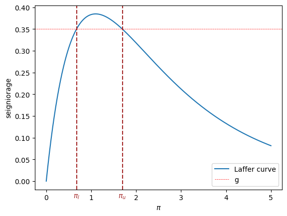
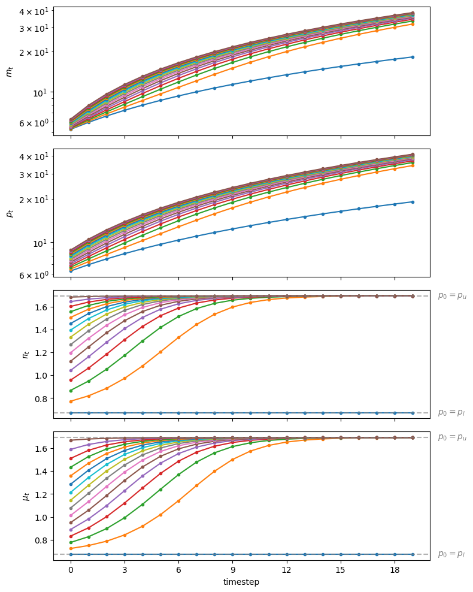
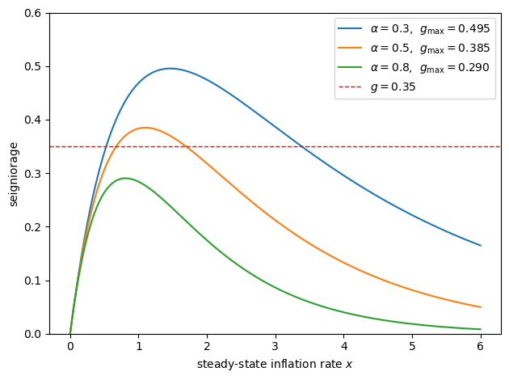

32. Inflation Rate Laffer Curves#
32.1. Overview#
We study stationary and dynamic Laffer curves in the inflation tax rate in a non-linear version of the model studied in Money Financed Government Deficits and Price Levels.
We use the log-linear version of the demand function for money that [Cagan, 1956] used in his classic paper in place of the linear demand function used in Money Financed Government Deficits and Price Levels.
That change requires that we modify parts of our analysis.
In particular, our dynamic system is no longer linear in state variables.
Nevertheless, the economic logic underlying an analysis based on what we called ‘‘method 2’’ remains unchanged.
We shall discover qualitatively similar outcomes to those that we studied in Money Financed Government Deficits and Price Levels.
That lecture presented a linear version of the model in this lecture.
As in that lecture, we discussed these topics:
an inflation tax that a government gathers by printing paper or electronic money
a dynamic Laffer curve in the inflation tax rate that has two stationary equilibria
perverse dynamics under rational expectations in which the system converges to the higher stationary inflation tax rate
a peculiar comparative stationary-state analysis connected with that stationary inflation rate that asserts that inflation can be reduced by running higher government deficits
These outcomes will set the stage for the analysis of Laffer Curves with Adaptive Expectations that studies a version of the present model that uses a version of “adaptive expectations” instead of rational expectations.
That lecture will show that
replacing rational expectations with adaptive expectations leaves the two stationary inflation rates unchanged, but that \(\ldots\)
it reverses the perverse dynamics by making the lower stationary inflation rate the one to which the system typically converges
a more plausible comparative dynamic outcome emerges in which now inflation can be reduced by running lower government deficits
32.2. The Model#
Let
\(m_t\) be the log of the money supply at the beginning of time \(t\)
\(p_t\) be the log of the price level at time \(t\)
The demand function for money is
where \(\alpha \geq 0\).
The law of motion of the money supply is
where \(g\) is the part of government expenditures financed by printing money.
Remark 32.1
Please notice that while equation (32.1) is linear in logs of the money supply and price level, equation (32.2) is linear in levels. This will require adapting the equilibrium computation methods that we deployed in Money Financed Government Deficits and Price Levels.
32.3. Limiting Values of Inflation Rate#
We can compute the two prospective limiting values for \(\overline \pi\) by studying the steady-state Laffer curve.
Thus, in a steady state
where \(x > 0 \) is a common rate of growth of logarithms of the money supply and price level.
A few lines of algebra yields the following equation that \(x\) satisfies
where we require that
so that it is feasible to finance \(g\) by printing money.
The left side of (32.3) is steady state revenue raised by printing money.
The right side of (32.3) is the quantity of time \(t\) goods that the government raises by printing money.
Soon we’ll plot the left and right sides of equation (32.3).
But first we’ll write code that computes a steady-state \(\overline \pi\).
Let’s start by importing some libraries
from collections import namedtuple
import numpy as np
import matplotlib.pyplot as plt
from matplotlib.ticker import MaxNLocator
from scipy.optimize import fsolve
Let’s create a namedtuple to store the parameters of the model
CaganLaffer = namedtuple('CaganLaffer',
["m0", # log of the money supply at t=0
"α", # sensitivity of money demand
"λ",
"g" ])
# Create a Cagan Laffer model
def create_model(α=0.5, m0=np.log(100), g=0.35):
return CaganLaffer(α=α, m0=m0, λ=α/(1+α), g=g)
model = create_model()
Now we write code that computes steady-state \(\overline \pi\)s.
# Define formula for π_bar
def solve_π(x, α, g):
return np.exp(-α * x) - np.exp(-(1 + α) * x) - g
def solve_π_bar(model, x0):
π_bar = fsolve(solve_π, x0=x0, xtol=1e-10, args=(model.α, model.g))[0]
return π_bar
# Solve for the two steady state of π
π_l = solve_π_bar(model, x0=0.6)
π_u = solve_π_bar(model, x0=3.0)
print(f'The two steady state of π are: {π_l, π_u}')
The two steady state of π are: (np.float64(0.6737147075333034), np.float64(1.6930797322614815))
We find two steady state \(\overline \pi\) values.
32.4. Steady State Laffer curve#
The following figure plots the steady state Laffer curve together with the two stationary inflation rates.
def compute_seign(x, α):
return np.exp(-α * x) - np.exp(-(1 + α) * x)
def plot_laffer(model, πs):
α, g = model.α, model.g
# Generate π values
x_values = np.linspace(0, 5, 1000)
# Compute corresponding seigniorage values for the function
y_values = compute_seign(x_values, α)
# Plot the function
plt.plot(x_values, y_values,
label=f'Laffer curve')
for π, label in zip(πs, [r'$\pi_l$', r'$\pi_u$']):
plt.text(π, plt.gca().get_ylim()[0]*2,
label, horizontalalignment='center',
color='brown', size=10)
plt.axvline(π, color='brown', linestyle='--')
plt.axhline(g, color='red', linewidth=0.5,
linestyle='--', label='g')
plt.xlabel(r'$\pi$')
plt.ylabel('seigniorage')
plt.legend()
plt.show()
# Steady state Laffer curve
plot_laffer(model, (π_l, π_u))
{kind=link}

Fig. 32.1 Seigniorage as function of steady state inflation. The dashed brown lines indicate \(\pi_l\) and \(\pi_u\).#
32.5. Initial Price Levels#
Now that we have our hands on the two possible steady states, we can compute two functions \(\underline p(m_0)\) and \(\overline p(m_0)\), which as initial conditions for \(p_t\) at time \(t\), imply that \(\pi_t = \overline \pi \) for all \(t \geq 0\).
The function \(\underline p(m_0)\) will be associated with \(\pi_l\) the lower steady-state inflation rate.
The function \(\overline p(m_0)\) will be associated with \(\pi_u\) the higher steady-state inflation rate.
def solve_p0(p0, m0, α, g, π):
return np.log(np.exp(m0) + g * np.exp(p0)) + α * π - p0
def solve_p0_bar(model, x0, π_bar):
p0_bar = fsolve(solve_p0, x0=x0, xtol=1e-20, args=(model.m0,
model.α,
model.g,
π_bar))[0]
return p0_bar
# Compute two initial price levels associated with π_l and π_u
p0_l = solve_p0_bar(model,
x0=np.log(220),
π_bar=π_l)
p0_u = solve_p0_bar(model,
x0=np.log(220),
π_bar=π_u)
print(f'Associated initial p_0s are: {p0_l, p0_u}')
Associated initial p_0s are: (np.float64(5.615742247288046), np.float64(7.14478978438031))
32.5.1. Verification#
To start, let’s write some code to verify that if the initial log price level \(p_0\) takes one of the two values we just calculated, the inflation rate \(\pi_t\) will be constant for all \(t \geq 0\).
The following code verifies this.
# Implement pseudo-code above
def simulate_seq(p0, model, num_steps):
λ, g = model.λ, model.g
π_seq, μ_seq, m_seq, p_seq = [], [], [model.m0], [p0]
for t in range(num_steps):
m_seq.append(np.log(np.exp(m_seq[t]) + g * np.exp(p_seq[t])))
p_seq.append(1/λ * p_seq[t] + (1 - 1/λ) * m_seq[t+1])
μ_seq.append(m_seq[t+1]-m_seq[t])
π_seq.append(p_seq[t+1]-p_seq[t])
return π_seq, μ_seq, m_seq, p_seq
π_seq, μ_seq, m_seq, p_seq = simulate_seq(p0_l, model, 150)
# Check π and μ at steady state
print('π_bar == μ_bar:', π_seq[-1] == μ_seq[-1])
# Check steady state m_{t+1} - m_t and p_{t+1} - p_t
print('m_{t+1} - m_t:', m_seq[-1] - m_seq[-2])
print('p_{t+1} - p_t:', p_seq[-1] - p_seq[-2])
# Check if exp(-αx) - exp(-(1 + α)x) = g
eq_g = lambda x: np.exp(-model.α * x) - np.exp(-(1 + model.α) * x)
print('eq_g == g:', np.isclose(eq_g(m_seq[-1] - m_seq[-2]), model.g))
π_bar == μ_bar: False
m_{t+1} - m_t: 1.6930797322614524
p_{t+1} - p_t: 1.693079732261424
eq_g == g: True
32.6. Computing an Equilibrium Sequence#
We’ll deploy a method similar to Method 2 used in Money Financed Government Deficits and Price Levels.
We’ll take the time \(t\) state vector to be the pair \((m_t, p_t)\).
We’ll treat \(m_t\) as a natural state variable and \(p_t\) as a jump variable.
Let
Let’s rewrite equation (32.1) as
We’ll summarize our algorithm with the following pseudo-code.
Pseudo-code
The heart of the pseudo-code iterates on the following mapping from state vector \((m_t, p_t)\) at time \(t\) to state vector \((m_{t+1}, p_{t+1})\) at time \(t+1\).
starting from a given pair \((m_t, p_t)\) at time \(t \geq 0\)
Next, compute the two functions \(\underline p(m_0)\) and \(\overline p(m_0)\) described above
Now initiate the algorithm as follows.
set \(m_0 >0\)
set a value of \(p_0 \in [\underline p(m_0), \overline p(m_0)]\) and form the pair \((m_0, p_0)\) at time \(t =0\)
Starting from \((m_0, p_0)\) iterate on \(t\) to convergence of \(\pi_t \rightarrow \overline \pi\) and \(\mu_t \rightarrow \overline \mu\)
It will turn out that
if they exist, limiting values \(\overline \pi\) and \(\overline \mu\) will be equal
if limiting values exist, there are two possible limiting values, one high, one low
for almost all initial log price levels \(p_0\), the limiting \(\overline \pi = \overline \mu\) is the higher value
for each of the two possible limiting values \(\overline \pi\) ,there is a unique initial log price level \(p_0\) that implies that \(\pi_t = \mu_t = \overline \mu\) for all \(t \geq 0\)
this unique initial log price level solves \(\log(\exp(m_0) + g \exp(p_0)) - p_0 = - \alpha \overline \pi \)
the preceding equation for \(p_0\) comes from \(m_1 - p_0 = - \alpha \overline \pi\)
32.7. Slippery Side of Laffer Curve Dynamics#
We are now equipped to compute time series starting from different \(p_0\) settings, like those in Money Financed Government Deficits and Price Levels.
# Generate a sequence from p0_l to p0_u
p0s = np.arange(p0_l, p0_u, 0.1)
line_params = {'lw': 1.5,
'marker': 'o',
'markersize': 3}
p0_bars = (p0_l, p0_u)
draw_iterations(p0s, model, line_params, p0_bars, num_steps=20)
{kind=link}

Fig. 32.2 Starting from different initial values of \(p_0\), paths of \(m_t\) (top panel, log scale for \(m\)), \(p_t\) (second panel, log scale for \(p\)), \(\pi_t\) (third panel), and \(\mu_t\) (bottom panel)#
Staring at the paths of price levels in Fig. 32.2 reveals that almost all paths converge to the higher inflation tax rate displayed in the stationary state Laffer curve. displayed in figure Fig. 32.1.
Thus, we have reconfirmed what we have called the “perverse” dynamics under rational expectations in which the system converges to the higher of two possible stationary inflation tax rates.
Those dynamics are “perverse” not only in the sense that they imply that the monetary and fiscal authorities that have chosen to finance government expenditures eventually impose a higher inflation tax than required to finance government expenditures, but because of the following “counterintuitive” situation that we can deduce by staring at the stationary state Laffer curve displayed in figure Fig. 32.1:
the figure indicates that inflation can be reduced by running higher government deficits, i.e., by raising more resources through printing money.
Note
The same qualitative outcomes prevail in Money Financed Government Deficits and Price Levels that studies a linear version of the model in this lecture.
We discovered that
all but one of the equilibrium paths converge to limits in which the higher of two possible stationary inflation tax prevails
there is a unique equilibrium path associated with “plausible” statements about how reductions in government deficits affect a stationary inflation rate
As in Money Financed Government Deficits and Price Levels, on grounds of plausibility, we again recommend selecting the unique equilibrium that converges to the lower stationary inflation tax rate.
As we shall see, accepting this recommendation is a key ingredient of outcomes of the “unpleasant arithmetic” that we describe in Some Unpleasant Monetarist Arithmetic.
In Laffer Curves with Adaptive Expectations, we shall explore how [Bruno and Fischer, 1990] and others justified our equilibrium selection in other ways.
32.8. Exercises#
Exercise 32.1
Peak seigniorage revenue and fiscal limits.
The steady-state seigniorage collected at inflation rate \(x\) is
a. Verify analytically that \(L(x)\) is maximized at
by differentiating, setting \(L'(x) = 0\), and solving for \(x\).
b. Using the default model, compute \(x^*\) from the analytic formula, confirm it
numerically with scipy.optimize.minimize_scalar, and plot the Laffer curve
with horizontal lines marking \(g_{\rm max} = L(x^*)\) and the benchmark
deficit \(g = 0.35\).
c. Evaluate \(L(x) - g\) over a fine grid of \(x\) values for \(g = g_{\rm max} + 0.01\) and explain what happens if the government attempts to finance a deficit \(g > g_{\rm max}\).
Solution to Exercise 32.1
Part a. Differentiating \(L(x)\):
Rearranging:
Since \(L''(x^*) < 0\), this is indeed a maximum.
from scipy.optimize import minimize_scalar
α = model.α
x_star_analytic = np.log((1 + α) / α)
g_max = compute_seign(x_star_analytic, α)
print(f"Analytic x* = ln((1+α)/α) = {x_star_analytic:.6f}")
print(f"g_max = L(x*) = {g_max:.6f}")
result = minimize_scalar(lambda x: -compute_seign(x, α), bounds=(0, 10), method='bounded')
print(f"Numerical x* = {result.x:.6f}")
Analytic x* = ln((1+α)/α) = 1.098612
g_max = L(x*) = 0.384900
Numerical x* = 1.098612
x_values = np.linspace(0, 5, 1000)
y_values = compute_seign(x_values, α)
fig, ax = plt.subplots()
ax.plot(x_values, y_values, label=r'$L(x)$')
ax.axhline(g_max, color='red', linestyle='--',
label=f'$g_{{\\rm max}}={g_max:.4f}$')
ax.axhline(model.g, color='blue', linestyle='--', lw=1,
label=f'$g={model.g}$')
ax.axvline(x_star_analytic, color='grey', linestyle=':', lw=1,
label=f'$x^*={x_star_analytic:.4f}$')
ax.set_xlabel(r'steady-state inflation rate $x$')
ax.set_ylabel('seigniorage')
ax.legend()
plt.tight_layout()
plt.show()
{kind=link}
Part c.
g_infeasible = g_max + 0.01
x_grid = np.linspace(0, 10, 10_000)
residual = compute_seign(x_grid, α) - g_infeasible
print(f"g_max = {g_max:.6f}")
print(f"g_infeasible = {g_infeasible:.6f}")
print(f"max L(x) - g = {residual.max():.8f} (always negative)")
g_max = 0.384900
g_infeasible = 0.394900
max L(x) - g = -0.01000004 (always negative)
When \(g > g_{\rm max}\), the equation \(L(x) = g\) has no real solution for any \(x \geq 0\).
Economically, the inflation tax cannot raise enough revenue to cover the deficit at any inflation rate because the government has exceeded the fiscal limit of the seigniorage Laffer curve.
No stationary equilibrium exists.
Exercise 32.2
How the two steady-state inflation rates depend on the deficit \(g\).
The lecture computes \(\pi_l\) and \(\pi_u\) for a fixed benchmark deficit \(g = 0.35\).
a. For \(g\) ranging from \(0.05\) to just below \(g_{\rm max}\), compute both \(\pi_l(g)\) and \(\pi_u(g)\) numerically and plot them on the same graph.
b. Describe the limiting behavior: - As \(g \to 0^+\), what do \(\pi_l(g)\) and \(\pi_u(g)\) approach? - As \(g \to g_{\rm max}^-\), what do they approach?
c. Mark the benchmark \(g = 0.35\) on your graph, read off the two values, and
confirm they agree with π_l and π_u computed in the lecture.
Solution to Exercise 32.2
α = model.α
x_star = np.log((1 + α) / α)
g_max = compute_seign(x_star, α)
g_grid = np.linspace(0.05, g_max * 0.999, 200)
π_l_curve, π_u_curve = [], []
for g in g_grid:
m_temp = create_model(α=α, g=g)
π_l_curve.append(solve_π_bar(m_temp, x0=0.3))
π_u_curve.append(solve_π_bar(m_temp, x0=3.0))
π_l_curve = np.array(π_l_curve)
π_u_curve = np.array(π_u_curve)
fig, ax = plt.subplots()
ax.plot(g_grid, π_l_curve, label=r'$\pi_l(g)$ - low-inflation steady state')
ax.plot(g_grid, π_u_curve, label=r'$\pi_u(g)$ - high-inflation steady state')
ax.axvline(model.g, color='grey', linestyle='--', lw=1,
label=f'benchmark $g={model.g}$')
ax.set_xlabel('government deficit $g$')
ax.set_ylabel('steady-state inflation rate')
ax.legend()
plt.tight_layout()
plt.show()
{kind=link}
Part b.
print(f"As g -> 0: π_l -> {π_l_curve[0]:.4f} (approaches 0)")
print(f" π_u -> {π_u_curve[0]:.4f} (large; approaches infinity)")
print(f"As g -> g_max: π_l -> {π_l_curve[-1]:.4f}")
print(f" π_u -> {π_u_curve[-1]:.4f}")
print(f"x* = {x_star:.4f} (the two roots merge here)")
As g -> 0: π_l -> 0.0527 (approaches 0)
π_u -> 5.9864 (large; approaches infinity)
As g -> g_max: π_l -> 1.0478
π_u -> 1.1512
x* = 1.0986 (the two roots merge here)
When \(g \to 0^+\), the curve \(L(x) = g\) has one root near \(x = 0\) (\(\pi_l \to 0\)) and another at very large \(x\) (\(\pi_u \to \infty\)).
As \(g\) rises toward \(g_{\rm max}\) the two roots approach each other and merge at \(x^* = \ln\bigl((1+\alpha)/\alpha\bigr)\).
Part c.
idx = np.argmin(np.abs(g_grid - model.g))
π_l_bench = solve_π_bar(model, x0=0.3)
π_u_bench = solve_π_bar(model, x0=3.0)
print(f"At benchmark g = {model.g}:")
print(f" π_l from curve = {π_l_curve[idx]:.4f}, π_l from lecture = {π_l:.4f}")
print(f" π_u from curve = {π_u_curve[idx]:.4f}, π_u from lecture = {π_u:.4f}")
print(f" direct solve = ({π_l_bench:.4f}, {π_u_bench:.4f})")
At benchmark g = 0.35:
π_l from curve = 0.6696, π_l from lecture = 0.6737
π_u from curve = 1.7012, π_u from lecture = 1.6931
direct solve = (0.6737, 1.6931)
Exercise 32.3
Effect of the money-demand elasticity \(\alpha\).
The parameter \(\alpha\) governs how sensitive real money demand is to expected inflation.
A larger \(\alpha\) means households reduce their real balances more sharply as inflation rises.
a. For \(\alpha \in \{0.3,\; 0.5,\; 0.8\}\), compute \(x^*(\alpha) = \ln\bigl((1+\alpha)/\alpha\bigr)\) and \(g_{\rm max}(\alpha) = \alpha^\alpha/(1+\alpha)^{1+\alpha}\), then plot the three Laffer curves on the same axes.
b. Keeping the deficit fixed at \(g = 0.35\), check for each \(\alpha\) whether the deficit is feasible (i.e., \(g \leq g_{\rm max}(\alpha)\)) and compute \((\pi_l,\, \pi_u)\) for each feasible case.
c. For every feasible \(\alpha\), simulate 20 periods starting from the midpoint \(p_0 = \tfrac{1}{2}(p_{0,l} + p_{0,u})\) and plot \(\pi_t\) on a single graph to identify what the paths have in common.
Solution to Exercise 32.3
Part a.
alphas = [0.3, 0.5, 0.8]
x_values = np.linspace(0, 6, 1000)
fig, ax = plt.subplots()
for α in alphas:
y_values = compute_seign(x_values, α)
x_star_α = np.log((1 + α) / α)
g_max_α = compute_seign(x_star_α, α)
ax.plot(x_values, y_values,
label=fr'$\alpha={α}$, $g_{{\rm max}}={g_max_α:.3f}$')
print(f"α = {α}: x* = {x_star_α:.4f}, g_max = {g_max_α:.4f}")
ax.axhline(0.35, color='red', linestyle='--', lw=1, label='$g=0.35$')
ax.set_xlabel(r'steady-state inflation rate $x$')
ax.set_ylabel('seigniorage')
ax.set_ylim([0, 0.6])
ax.legend()
plt.tight_layout()
plt.show()
α = 0.3: x* = 1.4663, g_max = 0.4955
α = 0.5: x* = 1.0986, g_max = 0.3849
α = 0.8: x* = 0.8109, g_max = 0.2904
{kind=link}

A larger \(\alpha\) flattens and narrows the Laffer curve, reducing the maximum seigniorage the government can raise.
Part b.
g = 0.35
print(f"Feasibility check for g = {g}\n")
steady_states = {}
for α in alphas:
m_temp = create_model(α=α, g=g)
x_star_α = np.log((1 + α) / α)
g_max_α = compute_seign(x_star_α, α)
if g <= g_max_α:
pl = solve_π_bar(m_temp, x0=0.3)
pu = solve_π_bar(m_temp, x0=3.0)
steady_states[α] = (pl, pu)
print(f"α = {α}: feasible (g_max = {g_max_α:.4f})"
f" -> π_l = {pl:.4f}, π_u = {pu:.4f}")
else:
steady_states[α] = None
print(f"α = {α}: infeasible (g_max = {g_max_α:.4f} < g = {g})")
Feasibility check for g = 0.35
α = 0.3: feasible (g_max = 0.4955) -> π_l = 0.5277, π_u = 3.3845
α = 0.5: feasible (g_max = 0.3849) -> π_l = 0.6737, π_u = 1.6931
α = 0.8: infeasible (g_max = 0.2904 < g = 0.35)
For \(\alpha = 0.8\) the maximum seigniorage falls below \(g = 0.35\), so no steady-state equilibrium exists.
Higher money-demand sensitivity tightens the fiscal limit of the inflation tax.
Part c.
num_steps = 20
fig, ax = plt.subplots()
for α in alphas:
if steady_states[α] is None:
continue
π_l_α, π_u_α = steady_states[α]
m_temp = create_model(α=α, g=g)
p0_l_α = solve_p0_bar(m_temp, x0=np.log(220), π_bar=π_l_α)
p0_u_α = solve_p0_bar(m_temp, x0=np.log(220), π_bar=π_u_α)
p0_mid = (p0_l_α + p0_u_α) / 2
π_seq_α, *_ = simulate_seq(p0_mid, m_temp, num_steps)
ax.plot(range(num_steps), π_seq_α,
marker='o', markersize=3, lw=1.5,
label=fr'$\alpha={α}$ ($\pi_u={π_u_α:.2f}$)')
ax.axhline(π_u_α, linestyle='--', lw=1, alpha=0.4)
ax.set_xlabel('time step')
ax.set_ylabel(r'$\pi_t$')
ax.legend()
plt.tight_layout()
plt.show()
{kind=link}
For every feasible \(\alpha\), the path from the midpoint \(p_0\) converges to the high-inflation steady state \(\pi_u\), confirming the perverse dynamics under rational expectations regardless of the value of \(\alpha\).